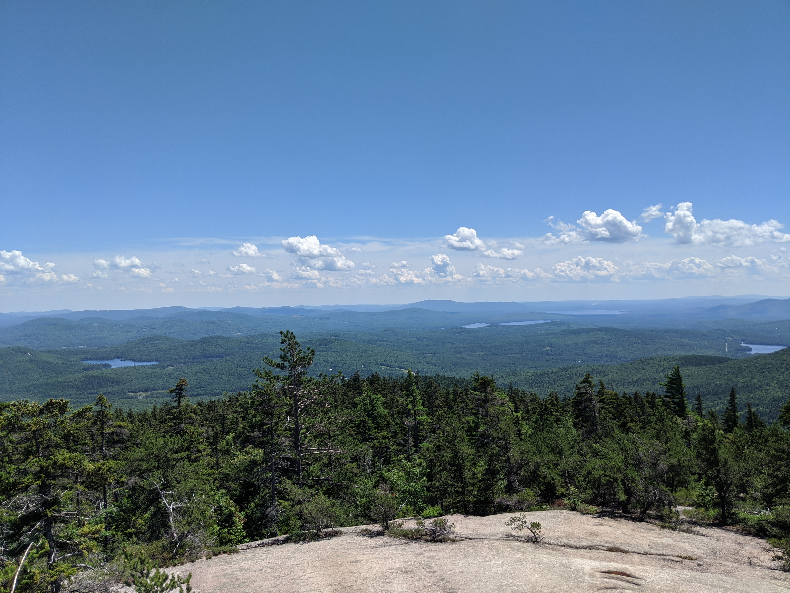
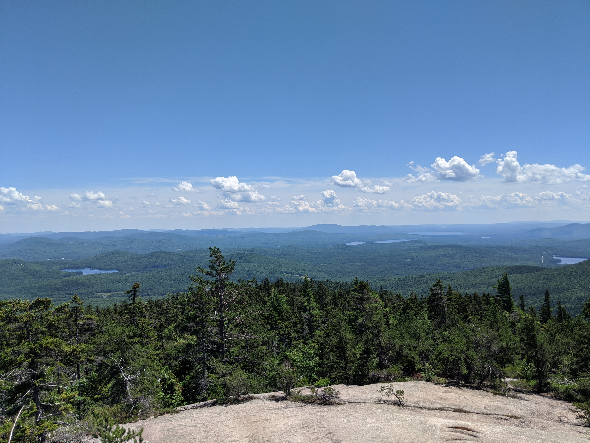

Distance
Distance Elevation
Elevation Observed Wildlife
Observed WildlifeThis challenging day hike provided consistent views from ridgeline hiking, a rarity in New England. The hike culminated with one of the best 360 degree views this side of the Mississippi.
My partner and I got a started at the Piper Trailhead and quickly made our way through the uneventful 1.2 miles of Piper Trail. The first half of this part had a mild incline which became slightly steeper during the second half. We then took a right turn onto Nickerson Ledge Trail which was immediately more steep. We quickly reached Nickerson Ledge in about a quarter mile where we were greeted by our first of many views. The trail took a drastic left turn and it took us a minute to make sure we were heading in the right direction. We then continued the remaining half mile of Nickerson Trail before turning left at Carter Ledge Trail.
After a short climb we reached the first view of the many Carter Ledge has to offer. We didn’t need to spend any time regulating our hiking speed since the trail offered many opportunities to step off and enjoy views of Chocorua to the west as well as open vistas east. In between each of these views we enjoyed picking the extraordinary amount of wild blueberries that lined the trail. The blueberries continued along almost the entirety of our ridgeline experience but was most pronounced during the stretch along Carter Ledge. As we climbed the scenery continued to improve and we turned left on Middle Sister Trail.


 



We had already expended lots of energy and were surprised to see Chocorua still so far away. More vista mixed with alpine forest filled our ridgeline hike from Middle Sister to Chocorua. The trail opened up and became difficult to stay on as we approached Chocorua. At times we just went in the direction of Chocorua ignoring the correct direction of the trail, at this point it was all open rock.


We were ecstatic to reach the peak of Chocorua since we had been saving our Sandwich Range sandwiches for the moment. Since it was Wednesday were were only one of a handful of groups enjoying the popular mountain and were able to take a seat only feet from the peak. We devoured our giant sandwiches and enjoyed the views in every direction from Mt Washington to Carrigain to the other peaks of the Sandwich Range, including Paugus, Passaconaway, and Whiteface. I enjoyed connecting the dots of the many hikes I had done earlier this year in the area. Check out this photosphere to get a real sense of the view.


We had packed two liters of water each but ended up drinking it all before we even left the peak (the one downside to camel backs is not seeing how much you have left) but I did pack a water filter. Unfortunately we did not encounter a water source until reaching Chocorua River over two miles into our descent. Fortunately we did continue to encounter many more wild blueberries to keep up going. Our route down was much shorter and easier than the way up as we followed Piper Trail all the way back to our car. The ridgeline experience continued for the beginning of downward climb and enjoyed one last vista before diving back into the trees a quarter mile before reaching the turnoff for Camp Penacook.
The final two miles of our hike was a nice steady grade which we were able to cover quickly. We were eager to get back to our car and find some more snacks along our route home. We started our drive by making the obligatory stop at Lake Chocorua where we took a dip and marveled at the beautiful mountain we just climbed. This day was a truly special one and a day hike I recommend to anyone able to do it.